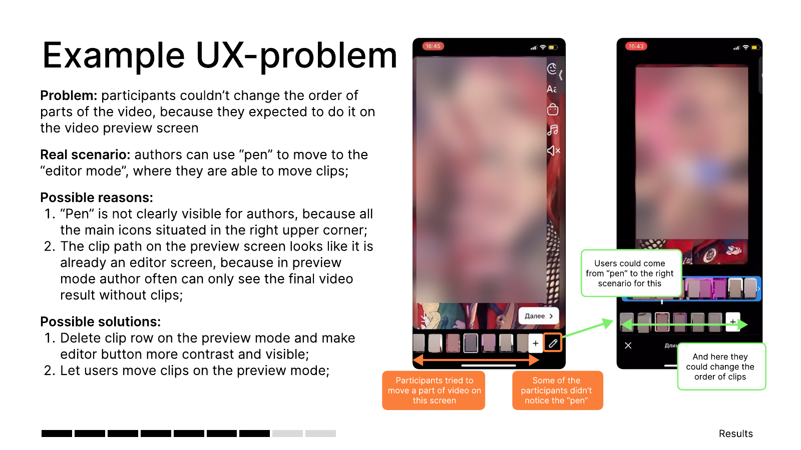

02 / VK / 2022
Why creators edited videos elsewhere
Creators could edit short videos in the app. Many still used other tools and came back only to publish.
- Role
- Study design, fieldwork & synthesis
- Methods
- Interviews, task-based usability testing
- Participants
- 8 creators in two groups
01 / The question
What made editing elsewhere feel easier?
The team saw limited use of the built-in editor, negative feedback on features and frequent uploads of videos made in other tools. We needed to compare creators’ actual workflows and see where our experience created friction.
02 / The study
Watch people make a video in both contexts.
I gathered existing creator feedback, reviewed the editor for possible usability issues and planned the study with the product team. I interviewed and observed four creators who used the in-app editor and four who preferred other editors.
Seeing them work through tasks made it possible to connect their stated preferences with concrete moments in the flow.
03 / One finding
The preview looked like the place to edit.
In one task, participants tried to reorder clips on the preview screen. The actual route to editing was a small pen icon. Some did not notice it, while the preview timeline looked editable enough to invite the wrong action.
The recommendation was to make the editor route more visible or let creators reorder clips where they already expected to do it.

04 / Implication
Ease and output quality both shaped the choice.
Competing tools made some trending-video tasks easier. Friction in our editor increased the time spent editing, and video quality mattered to creators too. I documented the issues and recommendations for the product team to consider.